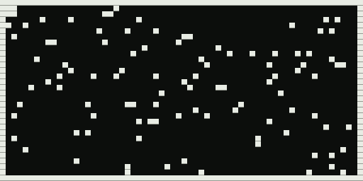
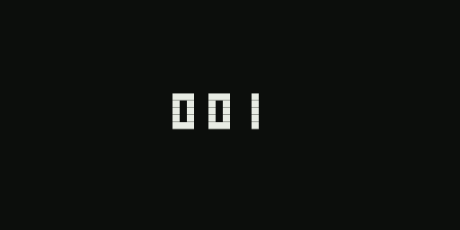

Asteroid Belt
J. Fisher · DREAMER no. 14 (1981-10) p. 16 1K RAM



Steer a 2x2 square from the top left corner to the bottom right corner through an asteroid field with as few crashes as possible. The game never stops by itself and the crash count is shown at the end, where any key but F restarts.
Keys
Speed 0 (fast) to F (slow), then 5 up, 8 left, A right, D down.
Files
| File | Version | Load | Run |
|---|---|---|---|
| Asteroid Belt.c8 | main | 0200-02FF | C000 |
Listing as transcribed (with notes): asteroid_belt.txt
Source
DREAMER no. 14 on archive.org, p. 16 (PDF page 18). Author: J. Fisher.
Corrections applied
None.
Open doubts
None.